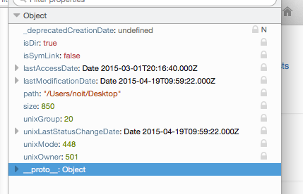
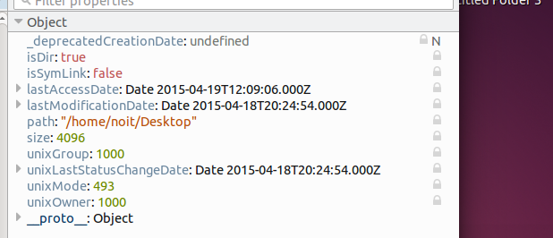

Instances of OS.File.Info represent file metadata, such as the size of the file, its last modification date, etc. Due to differences between operating systems, the information available depends on the platform.
Instances of OS.File.Info may be obtained by:
- calling global method
OS.File.stat()either from the main thread or from a worker thread; - calling instance method
stat()ofOS.Fileeither from the main thread or from a worker thread.
Using OS.File.Info
Example: Determining if a file is a regular file
The following snippet uses the main thread API to determine (asynchronously) whether some path is a regular file, or a directory, or a symbolic link:
let promise = OS.File.stat(somePath);
promise.then(
function onSuccess(info) { // |info| is an instance of |OS.File.Info|
if (info.isDir) {
// |somePath| represents a directory
} else if (info.isSymLink) {
// |somePath| represents a symbolic link
} else {
// |somePath| represents a regular file
}
},
function onFailure(reason) {
if (reason instanceof OS.File.Error && reason.becauseNoSuchFile) {
// |somePath| does not represent anything
} else {
// some other error
}
}
)
Example: Determining the owner of a file
let promise = OS.File.stat()
promise.then(
function onSuccess(info) {
if ("unixOwner" in info) {
// info.unixOwner holds the owner of the file
} else {
// Information is not available on this platform
}
}
);
Evolution of this example
Bug 802534 will introduce the ability to check whether field unixOwner appears in OS.File.Info.prototype, which will make it possible to write faster code.
Global object OS.File.Info
Methods
| object toMsg(in OS.File.Info value) |
OS.File.toMsg
Convert an instance of OS.File.Info to a form that can be serialized and transmitted between threads or processes.
object toMsg( in OS.File.Info value )
Arguments
Returns
An object with the same fields as value but that may be serialized and transmitted between threads or processes.
- value
- An instance of OS.File.Info.
Instances of OS.File.Info
Cross-platform Attributes
| isDir | true if the file is a directory, false otherwise. |
| isSymLink | true if the false is a symbolic link, false otherwise. (As of Firefox 38 this is always true on all systems, this is a bug: Bugzilla 1145885) (On Windows this returns false for hard links) |
| size | The number of bytes in the file. |
| creationDate | Deprecated in Bugzilla :: Bug 807875. Before deprecation, this used to be the date at which the file was created on Windows and Mac OS X, as a JavaScript Date object. On Unix systems it was returning the last modified date and thus it was deprecated. There is talk of reinstating this with proper functionality in Bugzilla :: Bug 1167143. The creationDate can be obtained on Windows by winBirthDate and on Mac OS X by macBirthDate. On older Unix filesystems it is not possible to get a creation date as it was never stored, on new Unix filesystems creation date is stored but the method to obtain this date differs per filesystem, Bugzilla :: Bug 1167143 explores implementing solutions for all these different filesystems) |
| lastAccessDate | The Date at which the file was last accessed, as a JavaScript Date object. Note that the definition of last access may depend on the underlying operating system and file system. |
| lastModificationDate | The Date at which the file was last modified, as a JavaScript Date object. |
Platform-specific attributes
Unix
| unixOwner | A number holding the identifier of the Unix owner of this file. |
| unixGroup | A number holding the identifier of the Unix group of this file. |
| unixMode | A number holding the Unix access rights to this file. |
| unixLastStatusChangeDate | Date. This is the date of the latest write/renaming/mode change/... where ... is any write/set of inode information (such as owner, group, link count, mode, etc). |
Windows
| winBirthDate | A Date representing the time at which the file was created. May not be exact on all file systems. | ||||||
| winAttributes |
|
MacOS X
| macBirthDate | A Date representing the time at which the file was created. May not be exact on all file systems. (As of Firefox 38 this attribute is not found, see screen shots below, Bugzilla :: Bug 1156060) |
Screenshot of Info object in Variable Viewer
MacOSX 10.10.1

Ubuntu 14.04.1

Windows 8.1